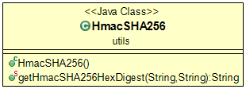

<body>
Das <code>utils</code> Package stellt verschiedene Hilfsklassen zur Verfügung.
Zum jetzigen Zeitpunkt befindet sich nur die Hilfsklasse <code>HmacSHA256.java</code>.


<br>
	<figure>
		
		<figcaption>Klassenstruktur des Packages</figcaption>
	</figure>

</body>